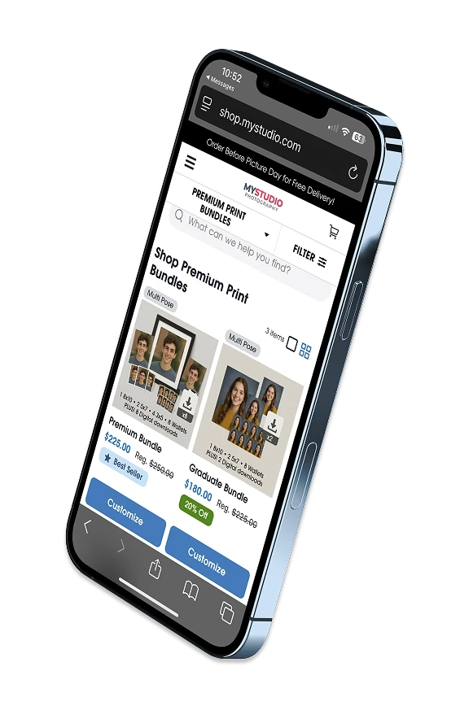

E-commerce Experience (B2C)
I worked across multiple areas of the e-commerce platform focused on helping end customers understand value, navigate options, and complete purchases with confidence.
Key focus areas included:
- Reducing friction in shopping and checkout flows
- Clearly communicating promotions, pricing, and incentives
- Designing flexible systems that adapt to different studio configurations
- Maintaining consistency across cart, checkout, and order summary views
These experiences required clarity and trust at moments of decision while supporting significant complexity behind the scenes.